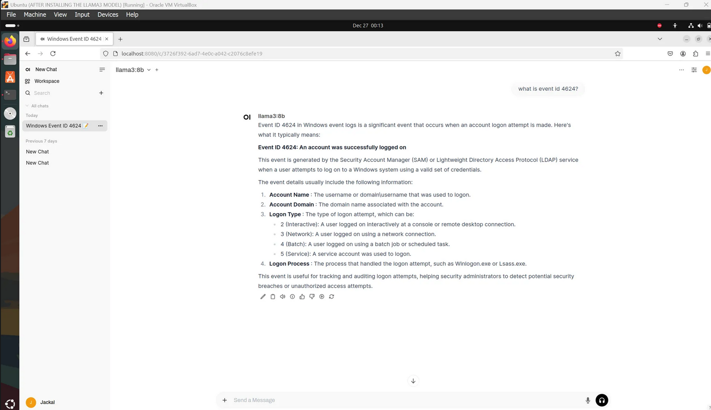
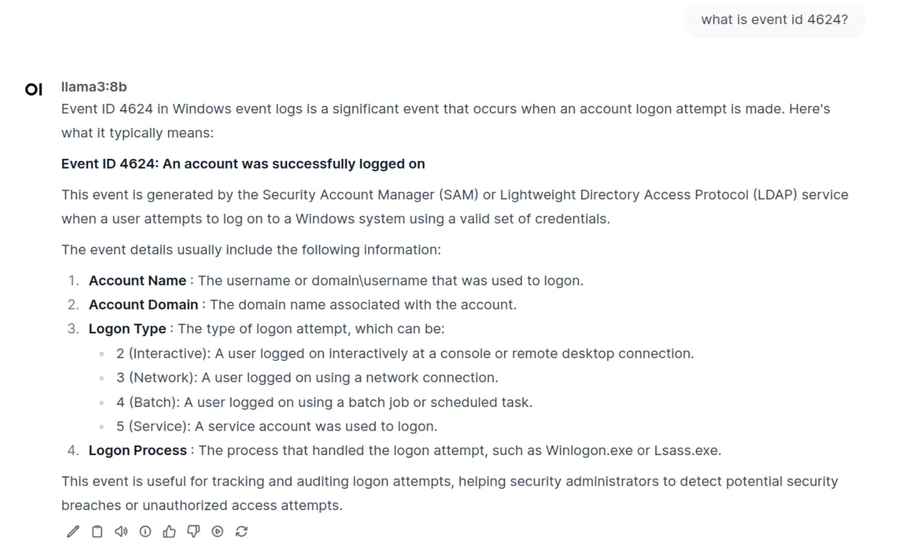
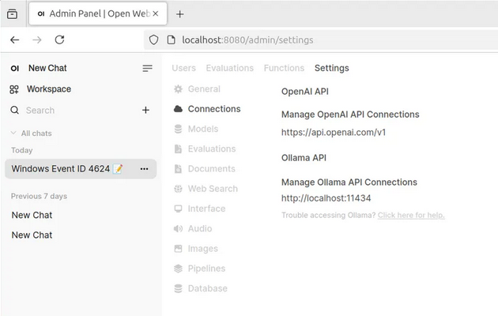

🗓️ 02 Jan 2025 - 👻 Yusuf Amr
 Why Local Private AI?
Why Local Private AI?
I’ve often been concerned about the accidental leakage of sensitive information through AI tools. Users, in their day-to-day work, may unknowingly share critical data with public AI platforms, potentially exposing confidential information. Additionally, some AI platforms might unintentionally reveal sensitive data through carefully crafted prompts, where a user manipulates the model to retrieve information it might have stored or cached.
In this article, I’ll share how I’ve approached implementing a local, private AI solution within a secure environment, where all data is stored privately on the machine hosting the AI.
To implement this, I chose OpenWebUI platform. It offered several advantages that made it ideal for my needs:
-
Web Interface: OpenWebUI functions as a web interface.
-
Network Accessibility: It is accessible by devices on the same network.
-
Robust Retrieval-Augmented Generation (RAG): This feature enhances the AI’s ability to retrieve and use context-specific information.
-
Ease of Integration: OpenWebUI supports straightforward API integrations, making it easier to connect with various data sources and tools.
-
Data Localization: All data is processed and stored locally, ensuring that nothing leaves the organization's secure environment.
Implementation Steps:
To set up OpenWebUI, I used an Ubuntu virtual machine running on VirtualBox. Below is an overview of the steps I followed:
->
Setting Up the Virtual Environment:
Installed VirtualBox and created a new Ubuntu virtual machine (VM).
Configured the network settings to ensure access across devices within the LAN.
->
Installing OpenWebUI:
OpenWebUI requires Python 3.11, but Ubuntu's default version was Python 3.12. To address this, I Installed Python 3.11 and set up a virtual environment called myenv, ensuring that Python packages are isolated for the project:
sudo apt install python3.11 python3.11-venv
sudo ln -sf /usr/bin/python3.11 /usr/bin/python3
python3 -m venv myenv
source myenv/bin/activate
pip install open-webui
deactivate
Installed OpenWebUI inside the virtual environment using python 3.11 and for the model we will use python 3.12 outside the virtual environment.
->
Integrating Meta’s Llama 3 2B Model:
To integrate Meta’s Llama 3 2B model, Installed the model outside the virtual environment and switched back to Python 3.12:
sudo ln -sf /usr/bin/python3.12 /usr/bin/python3
curl -fsSL https://ollama.com/install.sh | sh
ollama run llama3:8b
The model download was approximately 5GB, and once it was ready, I tested it through the OpenWebUI interface.
->
Running OpenWebUI:
To start OpenWebUI with Python 3.11, I used the following commands:
sudo ln -sf /usr/bin/python3.11 /usr/bin/python3
source myenv/bin/activate
open-webui serve
Once the server was running, I could access the AI interface through a browser at
http://localhost:8080, where I could select the model and start interacting with the AI.



API Integration:
One of the standout features of OpenWebUI is its connection tab, which allows easy integration of external APIs, such as Google Search or internal systems, for enhanced functionality.

Challenges and Lessons Learned
- Resource Management: Running models required significant computational resources, necessitating careful allocation of resources in the VM.
- User Adoption: Transitioning users from public AI platforms to a private instance required careful communication of the security benefits and addressing concerns about usability.
Conclusion
Implementing a local private AI solution, like OpenWebUI with ai model, proved to be an effective approach for enhancing security and ensuring data privacy. Not only did it strengthen our internal security posture, but it also demonstrated the feasibility of using AI in a controlled and secure environment. I highly recommend exploring this approach to protect sensitive information while leveraging the power of AI.
Resources:
-
OpenWebUI: https://github.com/open-webui/open-webui
-
Ollama for linux: https://ollama.com/download/linux
-
llama3: https://ollama.com/library/llama3
-
Ubuntu: https://ubuntu.com/download/desktop
-
VirtualBox: https://www.virtualbox.org/wiki/Downloads